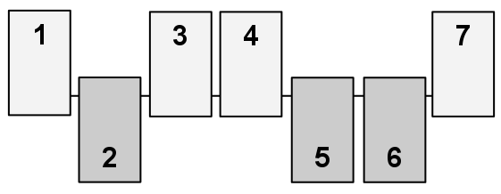

| Source file: | shut.{c, cpp, java} |
| Input file: | shut.in |
 Shut the Box is a one-player game that begins with a set of N pieces labeled from 1 to N. All pieces are initially "unmarked" (in the picture at right, the unmarked pieces are those in an upward position). In the version we consider, a player is allowed up to T turns, with each turn defined by an independently chosen value V (typically determined by rolling one or more dice). During a turn, the player must designate a set of currently unmarked pieces whose numeric labels add precisely to V, and mark them. The game continues either until the player runs out of turns, or until a single turn when it becomes impossible to find a set of unmarked pieces summing to the designated value V (in which case it and all further turns are forfeited). The goal is to mark as many pieces as possible; marking all pieces is known as "shutting the box." Your goal is to determine the maximum number of pieces that can be marked by a fixed sequence of turns.
As an example, consider a game with 6 pieces and the
following sequence of turns:
Hint: avoid enormous arrays or lists, if possible.
Input: Each game begins with a line containing
two integers, N, T where
1 ≤ N ≤ 22 represents the
number of pieces, and
1 ≤ T ≤ N
represents the maximum number of turns that will be allowed.
The following line contains T integers designating
the sequence of turn values for the game; each such
value V will satisify 1 ≤ V ≤ 22.
You must read that
entire sequence from the input, even though a particular game
might end on an unsuccessful turn prior to the end of the sequence.
The data set ends with a line containing
Output: You should output a single line for each game, as shown below, reporting the ordinal for the game and the maximum number of pieces that can be marked during that game.
| Example input: | Example output: |
| 6 4 10 3 4 2 6 5 10 2 4 5 3 10 10 1 1 3 4 5 6 7 8 9 10 22 22 22 21 20 19 18 17 16 15 14 13 12 11 10 9 8 7 6 5 4 3 2 1 0 0 | Game 1: 4 Game 2: 6 Game 3: 1 Game 4: 22 |